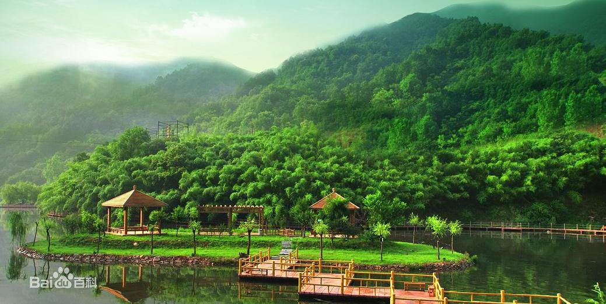
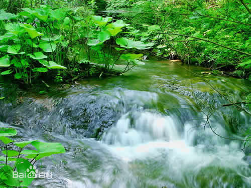

| 洛阳 luoyang | |||||||||||||||||||
重渡沟 |
|||||||||||||||||||
| 重渡沟位于洛阳市栾川县境内，因东汉光武帝刘秀二渡伊水至此，摆脱王莽追杀并成就帝业而得御赐之名。神秘的历史传说加上重渡沟的景区三绝，是重渡沟由鲜为人知名不见经传而一举唱红北国，声震华夏，成为河南省目前最具活力的十大热点景区的最好诠释。 | |||||||||||||||||||
|  | |||||||||||||||||||
| 景区介绍 | |||||||||||||||||||
| 重渡沟自然风景区位于洛阳市栾川县[1] 潭头镇西南10公里的熊耳山，是国家AAAA级旅游景区，区内竹茂林密，野生动植物繁多，800亩竹林密密层层，可与蜀南竹海相比美。重渡沟被业界权威人士魏小安先生称为“中国农家宾馆第一村”。到了重渡沟会看到杏花园、竹竿院、环翠居、故人庄等清雅质朴的名字点缀于窗含翠岭、竹环水绕的农家门楣上，床位已达1万余张。时任河南省省长李成玉称赞重渡沟是“生态旅游开发的典范；是家庭宾馆的楷模；是旅游带动脱贫的榜样。”国家旅游局局长邵琪伟对此亦给予了充分肯定。另有星级宾馆、豪华别墅，可满足高端客人之需求。 重渡沟自然风景区凭借“水清、竹多、落差大”这些自然优势和“茶文化、竹文化、水文化、农耕文化”的有机融合，让游客享受不尽乡村漂流的浪漫和情趣，领略到重渡沟生态旅游和乡村旅游的别样风光。景区内林茂草丰，雉飞鹿鸣，四季泉水喷涌，常年飞瀑成群，翠竹碧水交织，肥鸭壮鹅嬉戏，水乡特色浓郁，堪称“北国一绝”。被著名作家张一弓赞为“高峡飞瀑藏幽径，绿水秀竹怀古情；竖看山水横看竹，上听鸟语下听泉。”东都漫士《洛阳赋》：重渡沟生态旅游之典范，龙潭峡黄河山水之画廊。 重渡沟是一个娱乐的天堂。除了金鸡河景区生态娱乐园的各种生态娱乐设施外，还有滑道、滑索、滑草及各种野外拓展训练设施。重渡沟漂流以激流勇进启漂而独具特色，惊险刺激，与众不同。还有水上跑步球、水上跳跳床、碰碰船、游艇、垂钓等适宜于各种消费群体的花样繁多的水上娱乐项目。 重渡沟的演艺广场能使游客展示自我、放松情感、亦歌亦舞、各尽所能。夜晚的篝火晚会能使游客尽情释放一天的疲惫，从中体验到浓浓的山野风情。大型购物超市中的猴头、木耳、香菇、鹿茸、山核桃、山葡萄等数十种山珍野果及琳琅满目的旅游工艺纪念品能使游客各取所需。坐在典雅别致的小吃水巷，不仅能领略江南风韵，还可尽情品味地道的山珍野味。 走进返朴历史百年，归真农家田园的农耕民俗文化村，吃的喝的用的种的，都是土得掉渣的，穿的玩的干的看的，全是百十年前的。可参与打铁、榨油、制作陶器；纺棉、织布、扶犁试耕；看狮舞、品老酒、尝水磨豆腐；旋木器、打草鞋、学持械狩猎，尽享民俗风情。夜晚观农家灯火，坐木凳，哼小曲，赏山月，听蛙鸣，不是神仙，胜似神仙。 重渡沟风景区凭借独一无二的水乡竹韵，独具匠心的开发风格，独辟蹊径的促销谋略，独树一帜的经营理念，短短几年时间，使千百年来“养在深闺人未识”的重渡沟一举唱红中原，声震北国，成为豫西南最具活力的金牌子景区。 |
|||||||||||||||||||
|  | |||||||||||||||||||